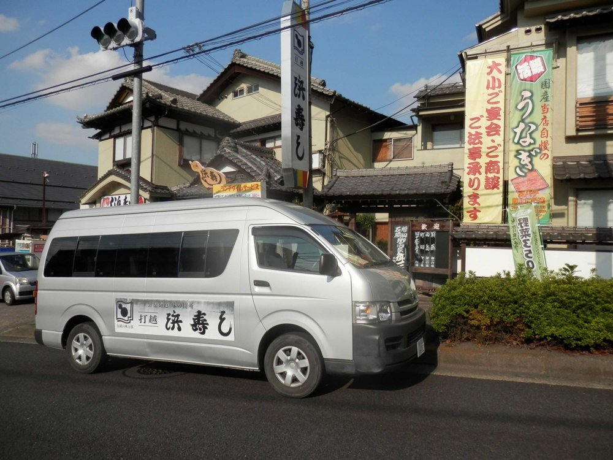
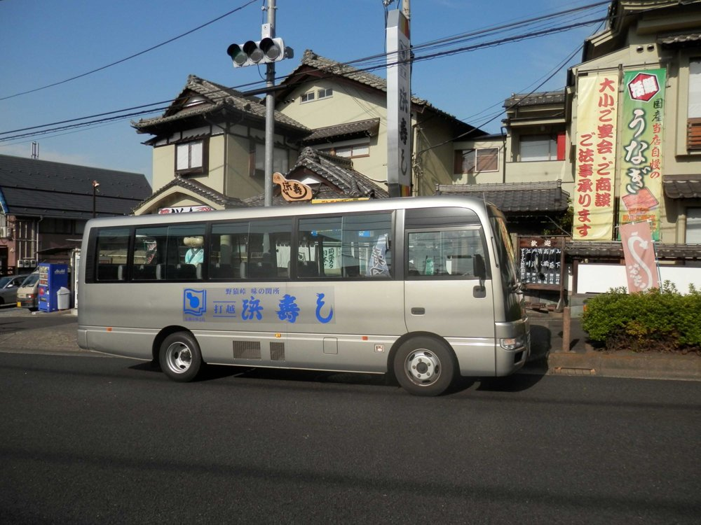

ACCESS
アクセス・店舗情報
京王線「北野駅」より徒歩約10分
| 店名 | 浜寿し打越店 |
|---|---|
| 住所 |
〒192-0011 東京都八王子市絹ケ丘1-52-16 |
| 電話 | 042-635-6983 |
| 営業時間 |
11:00 〜 22:00 ランチ：月〜土 11:00〜15:00（日・祝除く） |
| 定休日 | 毎週水曜日 ※祝日や臨時休業はインスタグラムでご確認ください |
| アクセス | 京王線「北野駅」より徒歩約10分 |
| 駐車場 | あり（詳細はお電話でご確認ください） |
交通手段
- JR八王子駅南口から南大沢駅行きバス乗車、「絹ヶ丘」バス停下車、徒歩0分
- 京王線北野駅北口から南大沢駅行きバス乗車、「絹ヶ丘」バス停下車、徒歩0分
- 京王線南大沢駅から八王子駅南口行きバス乗車、「絹ヶ丘」バス停下車、徒歩0分
- 京王線南大沢駅から北野駅北口行きバス乗車、「絹ヶ丘」バス停下車、徒歩0分
無料送迎バス
法事・慶事・宴会は無料送迎バスがございますので、お問い合わせ下さい。
（10名様より承ります）

14人乗り（お客様13人）

28人乗り（お客様27人）